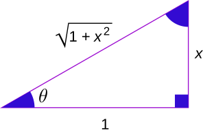

Knowing the derivatives of inverse trig functions can help us know certain antiderivatives. This is tricky: the derivatives of inverse trig functions look nothing like inverse trig functions!
Tricky does not mean “impossible”, however. We can find them using implicit differentiation. Let’s do one example: the derivative of \(\arctan(x)\). What does \(y = \arctan(x)\) mean? It means \(\tan(y)=x\) and \(-\pi/2 < y < \pi/2\). This is literally the definition of \(\arctan(x)\): it’s the inverse of \(y=\tan(x)\), which means we switch x and y, but we need to restrict the range since \(\tan(x)\) is periodic.
So to find \(y'\), we can use implicit differentiation on \(\tan(y)=x\). That is: take the derivative of both sides and use the chain rule: \[\begin{align} (\tan(y))^\prime = x^\prime \\ (\sec(y))^2 y^\prime = 1 \\ y^\prime = (\cos(y))^2 \end{align}\] This is where things get tricky. How do we plug back in \(y=\arctan(x)\) into \((\cos(y))^2\) and simplify? Let’s look at a triangle:

Let’s think about the relationship between the trig functions, inverse trig functions, and angles:
So if \(y=\arctan(x)\), \(y\) is the angle that we need to get \(\tan(y) = x\) our output. From the picture, if we want \(\tan(\theta) = x\) we can draw a right triangle, with an angle \(θ\), whose opposite side is \(x\) and the adjacent side is \(1\). Then the hypotenuse of the triangle (using the Pythagorean Theorem) is \(\sqrt{x^2 + 1}\). In this case, we are looking for cosine of that angle, which would be \(\dfrac{{1}}{\sqrt{x^2+1}}\). So: \[y^\prime = (\cos(y))^2 = \left(\frac{{1}}{\sqrt{x^2+1}}\right)^2 = \frac{{1}}{x^2 + 1}\] Now we have an explicit derivative of \(\arctan(x)\)! Therefore \(\int \frac{{1}}{1+x^2} dx = \arctan(x) + C\).
What about \(\int \frac{{1}}{9 + x^2}dx\)? In this case, we need to factor out \(\frac{{1}}{{9}}\): \[\begin{align}\frac{{1}}{{9}}\int \frac{{1}}{1 + \frac{x^2}{{9}}} dx \\ = \frac{{1}}{{9}} \int \frac{{1}}{1 + (\frac{{x}}{{3}})^2} dx \end{align}\] Let \(u=\frac{{x}}{{3}}\), \(du = \frac{{1}}{{3}} dx\), or \(dx=3du\) and continue: \[\begin{align} \frac{{1}}{{9}} \int \frac{{3}}{1 + u^2} du \\ = \frac{{1}}{{3}} \int \frac{{1}}{1 + u^2} du \\ = \frac{{1}}{{3}} \arctan(u) + C \\ = \frac{{1}}{{3}} \arctan(\frac{{x}}{{3}}) + C \end{align}\]
In general, \(\int \frac{{1}}{a^2 + u^2} du = \frac{{1}}{{a}} \arctan(\frac{{u}}{{a}}) + C\) for any real constant \(a\). The other inverse trig functions are listed in Section 1.7 of the textbook. I point these out not so that you necessarily memorize these formulas or even know how to come up with them yourselves, just so that you know that if an integral has a particular form and substitution does not work, you can double-check to see if it matches one of these forms.